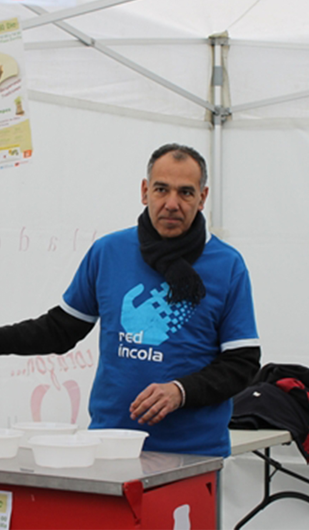

Este proyecto pretende mostrar la cara invisible de la ciudad de Valladolid, esa que no se ve pero es igual de importante o más que la que conocemos.
Personas sintecho que reciben la ayuda desinteresada de voluntarios que se preocupan por la gente más necesitada de la sociedad.
Gracias a los invisibles por hacer visible este trabajo.

El Proyecto
La solidaridad es clave para el bienestar del mundo, pero sobre todo en este momento donde guerras,
conflictos o ideologías extremas que creíamos enterradas ahondan profundamente en las desigualdades de la sociedad.
Nos interesa el hecho de ayudar a la gente que está en una situación precaria o necesita algún tipo de ayuda para vivir,
por eso en este trabajo me centro en contar mi experiencia con una de las ONG con las que contacte, con la finalidad de poder dar un testimonio sobre este voluntariado e
informar de todas las opciones que tienen los ciudadanos de la ciudad de Valladolid para colaborar con los más necesitados.
Para hacer este trabajo, he contactado con diversas ONG, siendo RED INCOLA la elegida por la relación estrecha que tiene con la gente sin hogar en Valladolid y
las facilidades que me han dado desde el primer momento para llevar mi proyecto a cabo.
Todos los lunes y los miércoles a las 21:30, las personas voluntarias de Red Íncola quedan en la asociación Entreculturas, aquí se dividen en grupos y
cada uno de ellos carga con termos, galletas, zumos, café y azúcar.
Red Íncola tiene localizadas a todas las personas que viven sintecho en Valladolid y prepara las rutas para ir a verles, ofrecerles café, conversación… además,
ofrece a los voluntarios la posibilidad de asistir a charlas para formarse y poder empatizar mejor con la gente que vive en la calle.
Durante varias noches he acudido a hacer estas "rutas" solidarias por la ciudad de Valladolid. Las memorias “Día a día” son el testimonio de una experiencia inolvidable
y muy enriquecedora. Las fotos son la prueba gráfica de lo que " no se ve " en esta ciudad. Por último, la landing page refleja todo el contenido de este proyecto.
Este último paso ha sido importante para demostrar el papel tan fundamental que tienen los nuevos soportes en el mundo de hoy en día. La página nos da la opción de con sólo un clic
acceder a las diferentes pestañas; toda la información, la experiencia, los vídeos y las fotos, pero también la información de todas estas ONG que ayudan en Valladolid.
Día a día
La solidaridad es clave para el bienestar del mundo, pero sobre todo en este momento donde guerras, conflictos, incluso el auge de ideologías extremas que creíamos enterradas,
ahondan profundamente en las desigualdades de la sociedad.
Nos interesa el hecho de ayudar a la gente que está en una situación precaria o necesita algún tipo de ayuda para vivir, por eso en este trabajo me centro en contar mi experiencia con una de las ONG con las que contacte,
con la finalidad de poder dar un testimonio sobre este voluntariado e informar de todas las opciones que tienen los ciudadanos de la ciudad de Valladolid para colaborar con los más necesitados.
Para hacer este trabajo he contactado con diversas ONG, siendo RED INCOLA la elegida por la relación estrecha que tiene con la gente sin hogar en Valladolid y las facilidades
que me han dado desde el primer momento para llevar mi trabajo a cabo.
En este proyecto encontramos en Red Íncola la asociación perfecta para el desarrollo del mismo.
Todos los lunes y miércoles a las 21:30, unas cuantas personas voluntarias quedan
en un punto determinado de la ciudad, se dividen en grupos y cada uno de ellos carga con termos, galletas, zumos, café y azúcar.
Red Íncola tiene localizados a todas las personas que viven sin techo en Valladolid y prepara las rutas para ir a verles, ofrecerles café, conversación… además, ofrece a los
voluntarios la posibilidad de asistir a charlas para formarse y poder empatizar mejor con la gente que vive en la calle.
Durante varias noches he acudido a hacer estas "rutas" solidarias por la ciudad de Valladolid. Las memorias “Día a día” son el testimonio de una experiencia inolvidable
y muy enriquecedora. Las fotos son la prueba gráfica de lo que " no se ve " en esta ciudad. Por último, la landing page refleja todo el contenido de este proyecto.
Este último paso ha sido importante para demostrar el papel tan fundamental que tienen los nuevos soportes en el mundo de hoy en día, ya que en la página podemos agrupar con
sólo un clic toda la información, la experiencia, los vídeos y las fotos, pero también la información de todas estas ONG que ayudan en Valladolid, disponiendo así a
la persona que está enfrente del ordenador buscando información sobre voluntariados.
A finales de los 90, con la llegada masiva de inmigrantes a Valladolid, se empezaron a crear los primeros programas de lo que hoy es la Red y a partir de ahí se fue organizando
¿Qué te mueve a hacer esto?
Me gusta mi trabajo, me gusta el contacto con la gente, tanto voluntarios como usuarios que se acercan cada día por la oficina o que asisiten a los programas
¿Cuál es el mayor problema con el que te has encontrado como coordinadora?
No me encuentro con grandes dificultades, quizá la más significativa es la falta de voluntarios en momentos puntuales y la premura para incorporarles a los programas.
¿Cómo definirías la situación que vive la gente sin hogar en Valladolid, en qué momento estamos?
Situación muy vulnerable, los que tienen alguna pequeña ayuda muy habituados a “vivir” en la calle les cuesta mucho hacerse a vivir en vivienda, pensión, etc…
Me parece que estamos en un impás, igual que hace 10 años
¿Qué apoyo consideras fundamental por parte de la ciudad, del ayuntamiento?
Haría falta un programa de atención a personas sin hogar integral, en el que la vivienda fuera accesible y a partir de ahí, con un compromiso,
ir trabajando otras áreas como salud, higiene, adicciones, formación, inserción laboral, etc…
¿Qué podríamos mejorar como ciudadanos para ayudar a esta gente sin hogar? y, ¿qué tipo de ayuda echas en falta a la hora de trabajar en este proyecto?
Como ciudadanos, no ignorarlos, viven en nuestra calle y tienen nombre.
Un “Buenos días, Manuel”, no cuesta nada, es un vecino más
En cuanto a nuestro Café Solidario, continuidad y constancia en los voluntarios, recursos materiales hacen falta pocos.
Lo más importante es la actitud de muestro acercamiento a las personas sin hogar.